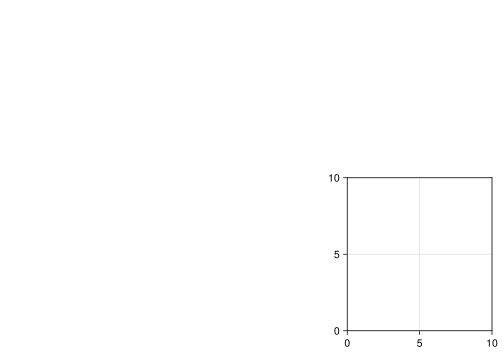
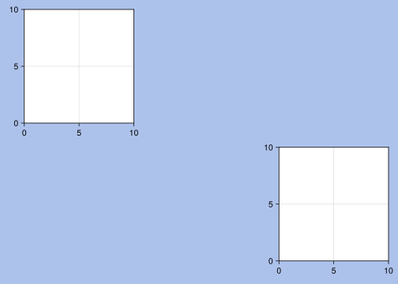

using CairoMakie # no need to import Makie itselfMakie
A data visualization ecosystem for Julia
There are several popular data visualization libraries for the Julia programming language (e.g. Plots, Gadfly, VegaLite, Makie). They vary in their precompilation time, time to first plot, layout capabilities, ability to handle 3D data, ease of use, and syntax style. In this landscape, Makie focuses on high performance, fancy layouts, and extensibility.
Makie comes with multiple backends. In this webinar, we will cover:
- GLMakie (ideal for interactive 2D and 3D plotting)
- WGLMakie (an equivalent that runs within browsers)
- CairoMakie (best for high-quality vector graphics)
We will also see how to run Makie in the Alliance clusters.
Slides (Click and wait: this reveal.js presentation is heavy and takes some time to load.)
Plotting in Julia
There are many options to create plots in Julia. Some of the most popular ones are:
- Plots.jl: high-level API for working with different back-ends (GR, Pyplot, Plotly…),
- PyPlot.jl: Julia interface to Matplotlib’s
matplotlib.pyplot, - PlotlyJS.jl: Julia interface to plotly.js,
- PlotlyLight.jl: the fastest plotting option in Julia by far, but limited features,
- Gadfly.jl: following the grammar of graphics popularized by Hadley Wickham in R,
- VegaLite.jl: grammar of interactive graphics,
- PGFPlotsX.jl: Julia interface to the PGFPlots LaTeX package,
- UnicodePlots.jl: plots in the terminal 🙂,
- Makie.jl: powerful plotting ecosystem: animation, 3D, GPU optimization.
This webinar focuses on Makie.jl.
The Makie ecosystem
Makie consists of a core package (Makie), with the plots functionalities.
In addition to this, a backend is needed to render plots into images or vector graphics. Three backends are available:
CairoMakie: vector graphics or high-quality 2D plots. Creates, but does not display plots (you need an IDE that does or you can use ElectronDisplay.jl),GLMakie: based on OpenGL; 3D rendering and interactivity in GLFW window (no vector graphics),WGLMakie: web version ofGLMakie(plots rendered in a browser instead of a window).
Resources
Here are some links and resources useful to get started with the Makie ecosystem:
- the official Makie documentation,
- Julia Data Science book, chapter 5,
- the project Beautiful Makie contains many great plot examples,
- cheatsheets:
for 2D plotting:

for 3D plotting:

Troubleshooting
CairoMakie and WGLMakie should install without issues. Installing GLMakie however can be challenging. This page may lead you towards a solution.
Extensions
A number of extensions have been built on top of Makie:
- GeoMakie.jl add geographical plotting utilities to Makie,
- AlgebraOfGraphics.jl turns plotting into a simple algebra of building blocks,
- GraphMakie.jl to create network graphs.
Fundamental functioning
Figure
Load the package (here, we are using CairoMakie):
Create a Figure (container object):
fig = Figure()
typeof(fig)FigureYou can customize a Figure:
fig2 = Figure(backgroundcolor=:grey22, resolution=(300, 300))
Makie uses the Colors.jl package as a dependency. You can find a list of all named colours here.
To use CSS specification (e.g. hex), you need to install Colors explicitly and use its color parsing capabilities:
using Colors
fig3 = Figure(backgroundcolor=colorant"#adc2eb")
Axis
Then, you can create an Axis:
ax = Axis(Figure()[1, 1])Axis with 0 plots:typeof(ax)AxisAxis(fig3[1, 1]) # fig3[1, 1] sets the subplot layout: fig[row, col]
fig3
Axis(fig[2, 3]) # This is what happens if we change the layout
fig
Axis(fig3[2, 3]) # We can add another axis on fig3
fig3
Axis are customizable:
fig4 = Figure()
Axis(fig4[1, 1],
xlabel="x label",
ylabel="y label",
title="Title of the plot")
fig4
Plot
Finally, you can add a plot:
fig = Figure()
ax = Axis(fig[1, 1])
x = LinRange(-10, 10, 20)
y = x
scatter!(ax, x, y) # Functions with ! transform their arguments
fig
Of course, there are many plotting functions, e.g. scatterlines!:
fig = Figure()
ax = Axis(fig[1, 1])
x = LinRange(-10, 10, 20)
y = x
scatterlines!(ax, x, y) # Functions with ! transform their arguments
fig
We can also use lines!:
fig = Figure()
ax = Axis(fig[1, 1])
x = LinRange(-10, 10, 20)
y = sin.(x) # The . means that the function is broadcast to each element of x
lines!(ax, x, y)
fig
Let’s add points to get a smoother line:
fig = Figure()
ax = Axis(fig[1, 1])
x = LinRange(-10, 10, 1000)
y = sin.(x) # The . means that the function is broadcast to each element of x
lines!(ax, x, y)
fig
Now, you don’t have to create the Figure, Axis, and plot one at a time. You can create them at the same time with, for instance lines:
x = LinRange(-10, 10, 1000)
y = sin.(x)
lines(x, y) # Note the use of lines instead of lines!
Or even more simply:
x = LinRange(-10, 10, 1000)
lines(x, sin)
This is a lot simpler, but it is important to understand the concepts of the Figure and Axis objects as you will need it to customize them:
x = LinRange(-10, 10, 1000)
y = cos.(x)
lines(x, y;
figure=(; backgroundcolor=:green),
axis=(; title="Cosinus function", xlabel="x label", ylabel="y label"))
When you create the Figure, Axis, and plot at the same time, you create a FigureAxisPlot object:
x = LinRange(-10, 10, 1000)
y = cos.(x)
obj = lines(x, y;
figure=(; backgroundcolor=:green),
axis=(; title="Cosinus function",
xlabel="x label",
ylabel="y label"));
typeof(obj)Makie.FigureAxisPlotNote the ; in the figure and axis value. This is because these are one-element NamedTuples.
The mutating functions (with !) can be used to add plots to an existing figure, but first, you need to decompose the FigureAxisPlot object:
fig, ax, plot = lines(x, sin)
lines!(ax, x, cos) # Remember that we are transforming the Axis object
fig # Now we can plot the transformed Figure
Or we can add several plots on different Axis in the same Figure:
fig, ax1, plot = lines(x, sin)
ax2 = Axis(fig[1, 2])
lines!(ax2, x, cos)
fig
Examples
2D
using CairoMakie
using StatsBase, LinearAlgebra
using Interpolations, OnlineStats
using Distributions
CairoMakie.activate!(type = "png")
function eq_hist(matrix; nbins = 256 * 256)
h_eq = fit(Histogram, vec(matrix), nbins = nbins)
h_eq = normalize(h_eq, mode = :density)
cdf = cumsum(h_eq.weights)
cdf = cdf / cdf[end]
edg = h_eq.edges[1]
interp_linear = LinearInterpolation(edg, [cdf..., cdf[end]])
out = reshape(interp_linear(vec(matrix)), size(matrix))
return out
end
function getcounts!(h, fn; n = 100)
for _ in 1:n
vals = eigvals(fn())
x0 = real.(vals)
y0 = imag.(vals)
fit!(h, zip(x0,y0))
end
end
m(;a=10rand()-5, b=10rand()-5) = [0 0 0 a; -1 -1 1 0; b 0 0 0; -1 -1 -1 -1]
h = HeatMap(range(-3.5,3.5,length=1200), range(-3.5,3.5, length=1200))
getcounts!(h, m; n=2_000_000)
with_theme(theme_black()) do
fig = Figure(figure_padding=0,resolution=(600,600))
ax = Axis(fig[1,1]; aspect = DataAspect())
heatmap!(ax,-3.5..3.5, -3.5..3.5, eq_hist(h.counts); colormap = :bone_1)
hidedecorations!(ax)
hidespines!(ax)
fig
end
3D
using GLMakie, Random
GLMakie.activate!()
Random.seed!(13)
x = -6:0.5:6
y = -6:0.5:6
z = 6exp.( -(x.^2 .+ y' .^ 2)./4)
box = Rect3(Point3f(-0.5), Vec3f(1))
n = 100
g(x) = x^(1/10)
alphas = [g(x) for x in range(0,1,length=n)]
cmap_alpha = resample_cmap(:linear_worb_100_25_c53_n256, n, alpha = alphas)
with_theme(theme_dark()) do
fig, ax, = meshscatter(x, y, z;
marker=box,
markersize = 0.5,
color = vec(z),
colormap = cmap_alpha,
colorrange = (0,6),
axis = (;
type = Axis3,
aspect = :data,
azimuth = 7.3,
elevation = 0.189,
perspectiveness = 0.5),
figure = (;
resolution =(1200,800)))
meshscatter!(ax, x .+ 7, y, z./2;
markersize = 0.25,
color = vec(z./2),
colormap = cmap_alpha,
colorrange = (0, 6),
ambient = Vec3f(0.85, 0.85, 0.85),
backlight = 1.5f0)
xlims!(-5.5,10)
ylims!(-5.5,5.5)
hidedecorations!(ax; grid = false)
hidespines!(ax)
fig
end
For more examples, have a look at Beautiful Makie.
Compiling sysimages
While Makie is extremely powerful, its compilation time and its time to first plot are extremely long. For this reason, it might save you a lot of time to create a sysimage (a file containing information from a Julia session such as loaded packages, global variables, compiled code, etc.) with PackageCompiler.jl.
The upcoming Julia 1.9 will do this automatically.
Using the Alliance clusters
CairoMakie
CairoMakie will run without problem on the Alliance clusters. It is not designed for interactivity, so saving to file is what makes the most sense.
Example:
save("graph.png", fig)Remember however that CairoMakie is 2D only (for now).
GLMakie
GLMakie relies on GLFW to create windows with OpenGL. GLFW doesn’t support creating contexts without an associated window. The dependency GLFW.jl will thus not install in the clusters—even with X11 forwarding—unless you use VDI nodes, VNC, or Virtual GL.
WGLMakie
You can setup a server with JSServe.jl as per the documentation. However, this method is intended for the creation of interactive widgets, e.g. for a website. While this is really cool, it isn’t optimized for performance. There might also be a way to create an SSH tunnel to your local browser, although there is no documentation on this.
Best probably is to save to file.
Conclusion about the Makie ecosystem on production clusters:
- 2D plots: use CairoMakie and save to file,
- 3D plots: use WGLMakie and save to file.